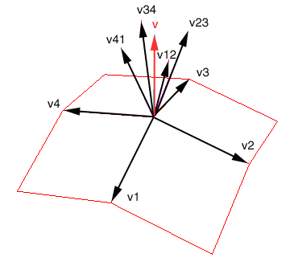

A play on Mario Kart
A user navigates a car down a track created by a bezier curve. The user attempts to complete the course without crashing into objects on the road.
We decided to start by creating a simple track with 4 bezier curves and 13 control points:
This curve will span the x and y plane, and will be rotated. The camera will then be set to travel down the track by modifying the camera's center and eye position according to the points calculated on the curve. The curve will also be able to be moved in the z plane to create hills. We decided the easiest way to make edits to our curve and make sure our camera can follow the track would be to implement two modes, an "edit mode" and a "game mode". In edit mode, you can rotate the track and adjust the control points, so that we can flexibly re-design our track as we see fit. In game mode, we scale the track up and move the camera to a starting point on the track. To create the track, we decided to use multiple curves along our chosen path and use GL_QUAD_STRIPS to created the path. we decided to make partial scenery on both sides of the track in a similar way, where we draw the scenery along the curves as we go:
For embellishments, we plan to use a grass or dirt texture for the scenery, and setting the background color of the opengl window to blue. We will also use a road texture with lines to create a 2-lane road. We will also be using shading, but have not decided which type to use. Options we debated are toon-shading or shadow mapping and shadow volumes. We have not decided if we want to create a realistic or cartoon style scene.
Since we formed our group early, we also started on the project a week early. This post is for the work we did before the first official turn in, Week 1.
We completed the bezier curve referencing homework 6 for help:
We created a track() class, with 3 draw methods. drawPoints, which draws the control points, drawCurves(), which draws the red bezier curve, and drawTrack(), which draws the actual track. In edit mode, drawPoints() and drawCurves() are called, while in game mode, only drawTrack() will be called. Currently, we have game mode also call drawCurves() for debugging. In edit mode, we disable GL_LIGHTING.
In edit mode, we can currently rotate the track. Adjusting control points is not implemented yet.
In game mode, we have temporarily found a general initial camera position using translation matrices. The user can use the keys up, down, left, and right to move the camera position. Currently, there are no restrictions on the amount you can translate the camera. Camera following the curve is not implemented yet.
We ran into a problem when we attempted to draw the track. If we simple scaled or translated the bezier curve to create the track, the track would become slightly distorted. We fixed this by drawing the inner and outer curves along points in the normals of the original curve
We achieved c0 continuity by using pointers for the control points in our bezier curve class. This way, the ending and starting point can be the same point. However, when we attempted to move a control point, we noticed we did not have C1 continuity.
From our previous assignment, our bezier curve class can calculate tangents and normals for itself, however, it does not work in the z-direction. Our original design was to draw the bezier curve in the x,z plane, however this problem led us to draw it in the x,y plane, then rotate the track.
We created a camera which starts at this initial position:
The camera now follows the track, including the curves using the up key:
We also finished mapping a road texture to the track.
We fixed near-plane clipping (oblique view frustum) which can be toggled on and off with the 'o' key:
A problem we ran into while creating the camera was the camera orientation. At first, we were caught in a bird's eye view of the track. We fixed this with rotations in the camera. we also found, once we fixed the rotation, that our camera was under the track, not above it. When we moved the camera to the correct position above the track by changing the camera's "up" vector, we realized the camera was traveling backwards.
In order to fix the new problem, we had to switch the order the control points were drawn to make the camera move the correct direction.
When we tried to get the camera to follow the track by looking at the points on the curve, we realized we were having pointer problems in our getNext() method, which returns the next point on the track. The problem was caused by discontinuity between the different curves on the track. we fixed these pointers so that the iteration through the track curves was receiving points from the track.
Another problem we faced was placing textures on quad-strips for the texture. Difficulties arose because each strip could not be mapped on a 1 to 1 ratio with the texture because we needed it to be modular. By mapping it one to one, you could not create a line stipple texture that spanned across multiple strips. Another issue with using 1 to 1 ratio is that in order to get viewable line stipples, each quad-strip would need to be pretty big, which would make the edges of track curves jagged, rather than smooth. To resolve this issue we spanned the texture across X(variable amount depending on texture) numbers of quad strips and played around with the number, while keeping track of which iteration we were in and restarted the texture when the loop reached (X+1).
We did not achieve C1 continuity this week. Partly because the ability to edit control points in edit mode was partially implemented, but not finished this week.
The track will not draw until you've hit the "up" arrow key at least once.
c1 continuity in the z-direction when adding in hills:
We wanted to add a flame particle effect to the output of the exhaust for 2 technical points. This was implemented by using the parametric equation of a cone to form the shape of the flame. Then GL_POINTS were moved along the z-axis, and the angle about the cone was changed to create a spiraling effect. Finally the colors were interpolated along the z-axis to create the flaming colors going from white to yellow, then yellow to red.
Added objects on road, with bounding spheres around each object and the car. we loop through and compare the car's bounding sphere to each object's bounding sphere. To start with, we print out a "crash!" message to the console upon collision.
In generating the terrain, we were aiming for a canyon effect and there were many factors that could affect implementation.
Fixed Point Translation ensures the overall terrain is within a certain max height/width range however, if it could pose problems for the texture. If there are two vertices, one at its min and the other at its max, the quad can be much bigger than the others, causing stretching in the texture if not taken care of properly.
Relative Translation addresses some of the issues above, however, the terrain at the very top may be very jagged.
Above: Fixed point on left, Relative on right.
Above: Fixed Point with random shifting
Above: Relative with shifting
X/Y Randomness can allow the terrain to be even more random and have some interesting results, however, the randomness range in the X and Y components need to be changed when changing locations on the track or else vertices may cross over each other, thus reversing the normal plane and texture.
Outward/Normal randomness resolves the above problem because it only shifts the vertices in a path normal to the track.
After trying various combinations, we opted for starting with a wall at 90 Degrees with the track, relative translation, and outward/normal randomness. This generated the most natural looking cliffs while still having some interesting formations.
Misc bugs related to terrain:
- Level 1 and 2 jutted out into the road when the randomness was in the direction of the track . We set randomness to only be away from the track for these levels.
- The rock formations from either side of the road occasionally touched. To fix this, we shifted the walls slightly away from the track. It would be interesting however, to add in some rock bridges.
The ideal mapping of the texture would be based on the area of each quad so the stretching would be even. This however would be very difficult to do. We tried various tileable textures however, it was not displaying well. During this time, we were using our Fixed Point Translation method stated above and also X/Y randomness. Although the terrain that was generated looked like what we wanted, we needed to alter our algorithms so that that the texture would look nice too.
Dr. Schulze recommended that we try to make a very high density graphic that wraps the whole track so the stretching would not affect the image as much. After creating a very large seamless and tileable image, we tried to apply it to the terrain. After trying to debug why the texture would not show up we found that the issue was due to a max texture size capability in openGL. Because of this, we opted for a smaller, but still very dense texture. This meant that we could not wrap a single image around the whole track, but to work around this, we implemented an algorithm to repeat textures in two dimensions.
Because texture coordinates range from [0,1] in the X and Y components, we needed a way to break up the texture. We used similar algorithms as our track texture, however, this time we had another component to take care of. The track's texture spanned across the whole width of the track track and we only needed to take care of repeating the track texture. For the terrain texture, we implemented an algorithm based on how maximum levels of terrain, current level, strips per texture in two different components, This code would now allow us to to repeat the pattern upward and alongside the track making it easy to test what ratio worked.This code is also modular so whenever we altered the terrain, which was very often, it would still be functional.
Track length, camera skip caused by the sides of the track being shorter than the curved sides, fixed by doubling length of sides.
Car following track vs only being drawn stationary on screen
Texture wrap-around bug - Roughly every 10 strips of terrain, there would be one that was different than the others. At times, it would just be a line, and at other times, it seemed like it was a strip of texture. To fix this, whenever quad strip reached the end, we needed to redefine another set of vertices on top of it, but with new texture coordinates starting at 0.
Bounding Boxes collision detection is a little slow due to the comparison with every object with the car every frame. Could be optimized to only compare with objects on the current curve of the track. This would also take care of the bug where it occasionally detects collision with a object off-screen or small somewhere down the road.
Total of: 9 points for our group of three.
Per Surface Normals- Added initial normals calculated per surface
Per Vertex Normals- Calculated per vertex normals using surrounding vertices
[Photo Credit: lighthouse3d]
New Texture- Created new, less distracting, brown texture that emphasizes normals more
Terrain Randomness modification Smooth Steering Variable Speed/FPS Limiter- Added FPS limiter to control speed of game
HD/Square Dimensions- Added options to switch between square and rectangular windows
3D Collision Detection- Switched to 3D detection
- Added crash message & pause
- Added reset
Moving Obstacles- Added code to shift the objects sideways on the track
Reference: CSE167 Final project 2013
Github: https://github.com/Tsuruko
Email: liu.mona.c@gmail.com
{kind=link}
{kind=link}
{kind=link}
{kind=link}
{kind=link}
{kind=link}
{kind=link}
{kind=link}
{kind=link}
{kind=link}
{kind=link}
{kind=link}
{kind=link}
{kind=link}
{kind=link}
{kind=link}
{kind=link}
{kind=link}
{kind=link}
{kind=link}
{kind=link}
{kind=link}
{kind=link}